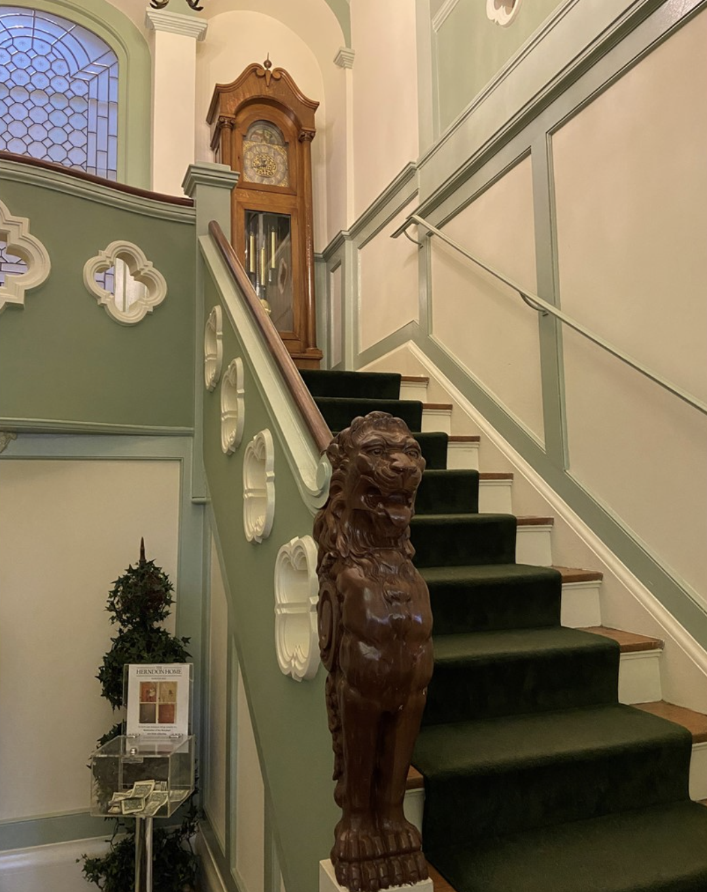
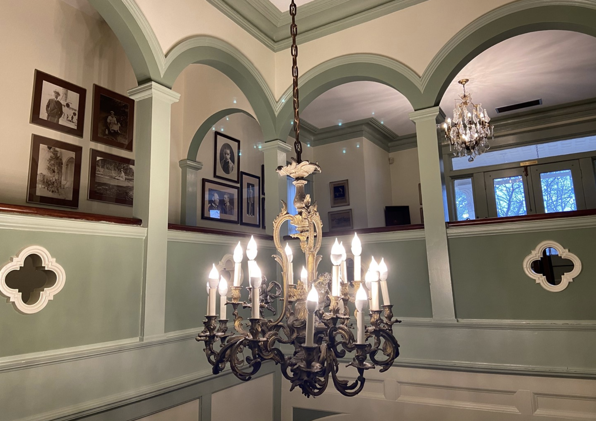
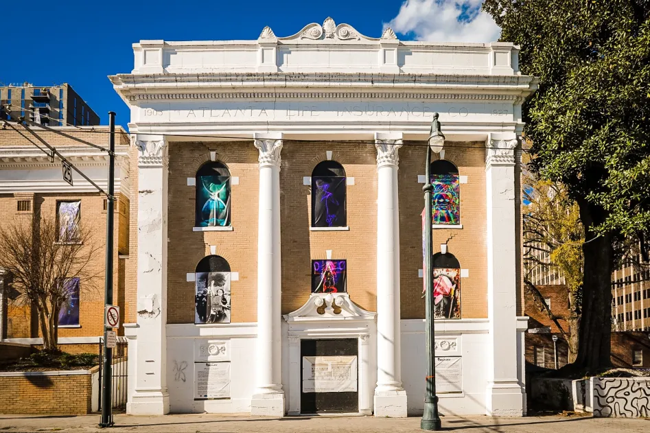
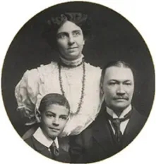
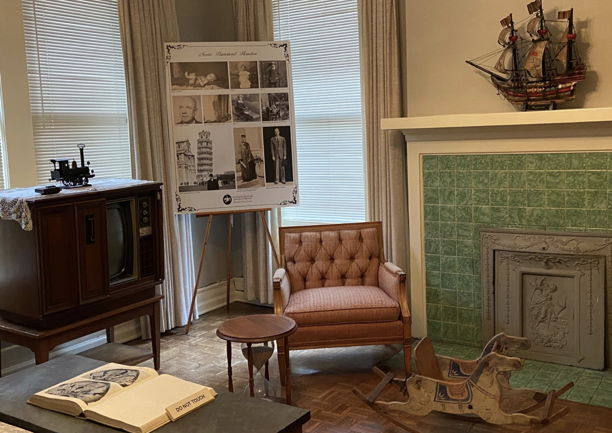
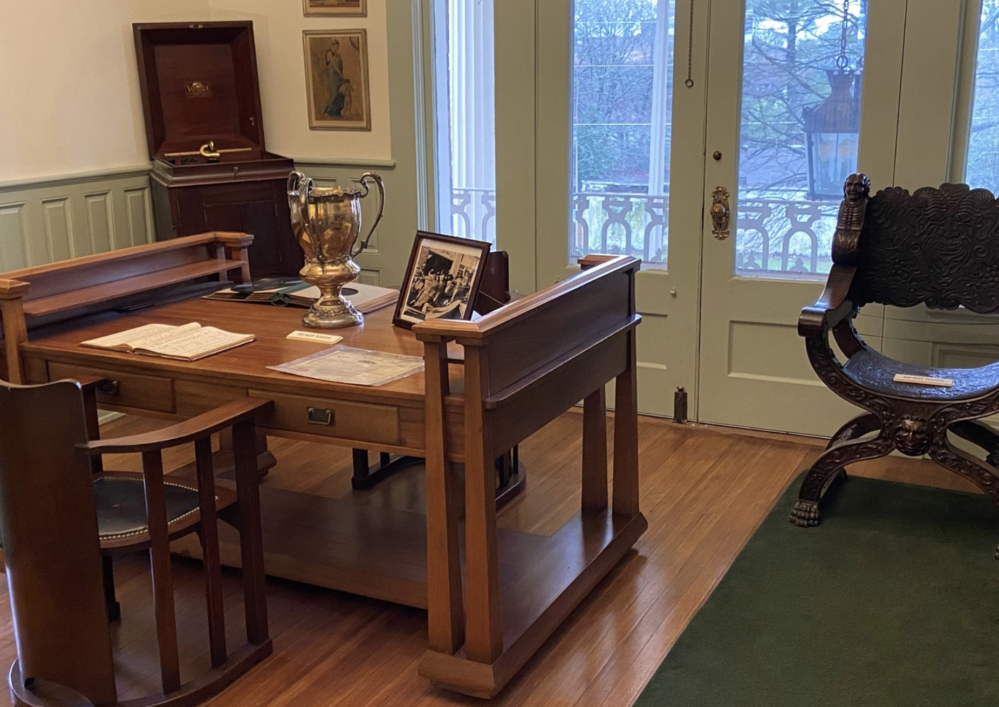

Exhibits & Collections
Craftsmanship, enterprise, and family — preserved for generations.

Hand-Carved Staircase Newel
Carved circa 1909 by an African American craftsman whose name history did not record — but whose skill speaks for itself.
The newel post anchors the grand staircase in the reception hall, featuring Renaissance Revival acanthus leaves and scrollwork that Adrienne Herndon specified in her architectural plans.
Always On View

Built by Black Hands
Explore the extraordinary craftsmanship of the African American artisans who constructed every detail of this home — from masonry to woodwork to plaster.

Enterprise & Insurance
From barber shop to Atlanta Life Insurance Company — trace Alonzo Herndon's journey from enslavement to becoming one of America's first Black millionaires.

The Herndon Family
Portraits, personal artifacts, and stories of Alonzo, Adrienne, Norris, and Jessie — four generations of leadership and philanthropy.
Current & Upcoming

Adrienne's Vision: Design & Activism
Now through September 2026
An intimate look at Adrienne Herndon's life as actress, educator, and the architect of this home — and her role in Atlanta's early civil rights movement.

Atlanta Life: A Global Legacy
Opening October 2026
Norris B. Herndon expanded his father's company across three continents. This exhibit explores Atlanta Life's global impact on Black economic empowerment.
Explore Online
Photographs, 3D models, and oral histories from our archives — accessible to researchers, students, and the public.



🧊
Interactive 3D Models
Explore key artifacts in three dimensions. Rotate, zoom, and examine details of the home's original furnishings and architectural elements.
🎙️ Remembering the Craftsmen
Descendants of the artisans who built the Herndon Home share stories passed down through generations.
🎙️ Growing Up on University Place
Neighbors recall the Herndon family and life in Atlanta's Westside during the mid-20th century.